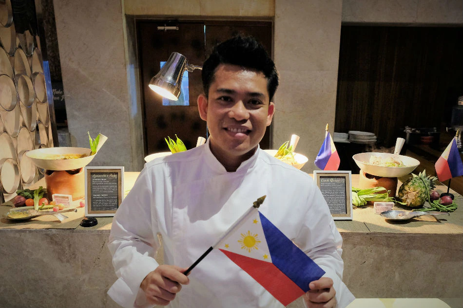

Odin Recipes
Filipino Cuisine
Filipino cuisine is a rich and diverse blend of flavors, influenced by the country's history, geography, and cultural diversity. The Philippines, an archipelago of over 7,000 islands in Southeast Asia, has a culinary tradition that reflects a fusion of indigenous, Spanish, Chinese, American, and Malay influences. Here are some key elements and characteristics of Filipino cuisine:
Some Filipino Dishes
ADOBO
Adobo is a popular Filipino dish known for its savory and slightly tangy flavor profile. It is a cooking method that involves marinating meat, usually chicken or pork, in a mixture of vinegar, soy sauce, garlic, and various spices, and then simmering it until tender. Adobo is considered the unofficial national dish of the Philippines and holds a special place in Filipino cuisine.
SINIGANG
Sinigang is a popular and savory Filipino soup known for its distinct sour flavor. It is a comforting and hearty dish that features a tamarind-based broth, although other souring agents such as guava, green mango, or calamansi may also be used. Sinigang is often prepared with a variety of meats, such as pork, beef, shrimp, or fish, and it typically includes an assortment of vegetables.

TURON
Turon, also known as banana lumpia or banana spring rolls, is a popular Filipino snack or dessert. It is made by wrapping slices of ripe banana and sometimes with a slice of jackfruit in a spring roll wrapper, then frying the roll until it becomes golden and crispy. Turon is often sweetened with caramelized sugar, giving it a delightful combination of crunchy texture and sweet flavor.